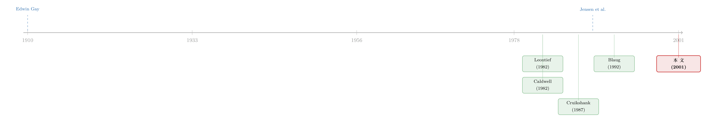

金融学的工具箱里，那把几乎没人用的「锉刀」
本文读的是 Tufano (2001, Journal of Financial Economics)：这是一篇为 HBS–JFE 会议专辑写的导言。它抛出一个尴尬的事实——在金融学三大顶刊里，逐个案例「精耕细作」的临床研究 (clinical research) 只占约 4% 的篇幅；然后它不去抱怨这个数字，而是反过来追问：这把几乎没人用的「锉刀」，到底在我们的工具箱里干什么用？答案是四件事——发展理论、检验理论、应用理论、传播理论。
1 一个尴尬的数字
先说一个让人有点不舒服的事实。
如果你随手翻开 1999 年的《金融学杂志》(Journal of Finance)、《金融经济学杂志》(JFE) 和《金融研究评论》(Review of Financial Studies)，把那一年发表的每一篇论文按「主要用了什么方法」归个类，你会得到一张很有意思的成绩单。Tufano 真的这么做了：173 篇文章、5,137 页纸，编码方案借自 Leontief (1982) 给经济学做过的那套分类。结果是这样的——
- 数学理论模型：占文章数的
20.2%，页数的21.0%； - 基于现成大型数据库（CRSP、Compustat 之类）的实证：
52.6%的文章、51.0%的页； - 作者自己动手攒数据的中等规模实证：
11.6%； - 模拟与实验：
3.5%； - 而对一两家公司、一两个事件做密集考察的临床研究：
4.0%的文章、4.1%的页。
四个百分点。这就是一门以「严谨」自居的学科，留给「贴着一家公司看上三个月」这种研究的全部位置。
接着，一个自然的问题是：少，是不是就等于不重要？
Tufano 的笔锋很克制，他甚至没有急着替临床研究辩护。他先讲了一段更早的旧事：早在 JFE 设立临床论文专栏将近 80 年前，哈佛商学院 (HBS) 的人就在为「什么才算研究方法」吵架了。1910 年，HBS 的首任院长 Edwin Gay 写道，他坚信「商业这门艺术背后存在一种科学的方法」，值得被认真地研究 (Cruikshank, 1987)。此后几十年，这所学校不光做出了让它声名远扬的案例研究，还构建大型数据库、发展分析理论，甚至搭起了今天会被叫做「实验经济学」的现场实验室。
于是真正的张力浮现了：HBS 也好、JFE 也好，从来都拥抱多种方法。可一门学科的「方法菜单」上明明摆着理论、大样本统计、临床考察这一整套工具，为什么大家几乎清一色地只点了同一道菜——「拿现成的大数据库跑回归」？
2 把研究当成一门手艺
这里要引出全文我最喜欢的一个比喻，也是理解这篇导言的钥匙。
Tufano 说，要打一件好家具，木匠会用到很多种工具——锯子、锉刀、车床，各有各的活儿。要搭一个站得住脚的论证，学术匠人手里同样有一整套工具：理论、大规模统计检验、临床研究。区别在于：你很容易判断什么时候该用锯子、什么时候该用锉刀；可要想清楚理论、大样本实证、以及其他探究方式——尤其是临床工作——各自的恰当位置，就复杂得多了。
这个比喻的妙处在于，它一下子把问题从「临床研究够不够高级」换成了「临床研究是干什么用的」。锉刀不比锯子低级，它只是用来干锯子干不了的活。
那临床研究到底指什么？Tufano 给了一个不纠缠语义的定义：它是一种实证工作（即基于观察、而非内省），其中「相对少量的事件被密集地考察」。注意，「样本小」和「考察密集」并不是一回事。密集考察，往往意味着收集远超标准数据库的信息——可能是手工整理公开材料（法律文书、分析师报告），可能是分析公司的内部文件（规划文档、备忘录、邮件、内部管理报告），也可能是直接访谈决策者（经理、投资者、交易员）。一个只研究一家公司的「小样本」研究，如果它的观测单位是「员工」或「日内逐笔交易」，数据量其实可以大得吓人。
为了把这件事说清楚，Tufano 画了一张很简洁的 2×2 表，横轴是样本大小，纵轴是数据收集方式：
- 小样本 + 密集私有数据：传统的田野/案例研究；
- 大样本 + 密集私有数据：问卷调查、各种「独家」数据库；
- 小样本 + 公开数据：小规模实证（如行业层面研究）；
- 大样本 + 公开数据：传统的 CRSP/Compustat 式实证。
会议专辑里那十篇论文，几乎都落在「小样本 + 密集数据」这一格。比如三篇风险管理的论文——其中一篇（Brown）的作者在一家跨国公司内部待了三个月，动用了学术界几乎拿不到的内部信息，去搞清楚这家公司不光「怎么对冲」、更难回答的「为什么对冲」；又比如 Chacko、Tufano 和 Verter 研究一家生物科技公司买入自家股票看涨期权这个反常决策。而 Graham 和 Harvey 那篇对 392 位 CFO 的问卷，则落在「大样本 + 密集私有数据」一格（关于这篇 CFO 问卷，可参见《把 CFO 们叫来对一次答案：理论说该这么做，他们真的这么做了吗？》）。
3 但真正关键的一步：先拆穿「科学方法」这个神话
讲到这里，你可能以为接下来就是常见的「为冷门方法鸣不平」。但这篇导言真正聪明、也最值得细读的一步，是它先掉头去拆穿了主流方法引以为傲的那块招牌——「科学方法 (scientific method)」。
很多纯粹主义者喜欢给自己披上「科学方法」这件外衣：通过内省或数学理论推出逻辑命题，由此生成假设，再用大数据集去检验它。听起来无懈可击。
可 Tufano 借 Blaug (1992) 对经济学方法论的梳理指出，这套自我描述其实并不准确。Blaug 认为科学学习的精髓在于证伪（rejecting）理论；Caldwell (1982) 则相反，认为科学是靠证实（confirmation）理论前进的。两人吵归吵，却在一点上达成了共识：绝大多数经验经济学的真实底色，是「证实主义 (confirmationism)」——我们往往只是得出「某个结果与某理论一致」这样的结论。
这一句是全文的暗钉。它的意思是：理论极少在最严格的意义上被检验。我们的大样本经验证据，嘴上说着要去拒绝待检的理论，实际上常常只是回过头来确认了它——而这是一种弱得多的研究。
于是反转出现了。一旦你承认主流的「大样本检验」其实多半在做「证实」而非「证伪」，临床研究的尴尬地位就被重新定义了：它不是科学方法的次品，它只是诚实地承认了自己在干什么。在这幅对研究实践更现实的描述里，临床研究可以扮演四种角色——这四个角色，才是整篇导言的核心。
4 临床研究的四件活儿
第一，发展理论（developing theory）。 直接观察能不能催生理论与假设？这种活动有时被称为「外展推理 (adduction)」，在我们要为「个人或公司如何行动」生成理论时尤其宝贵。Tufano 举的例子是：一些解释个人与公司如何做决策的行为金融，其灵感似乎正来自外展。本专辑里 Chidambaran 等、Froot、Dhillon 等的论文，都用直接观察来催生理论。
第二，检验理论（testing theory）。 这里有一句很扎心的实话。如果我们的理论足够锋利，以至于单单一个反例就能将其证伪，那临床工作将是检验理论的利器。然而，金融经济学里的多数理论，哪怕拿一大堆观测都拒绝不了，更别说一个单一观测了。 所以临床工作能做的，是添加确证性的证据——比如 Brown 和 Hartzell、或 Esty 的论文，通过看具体证券如何逐日吸收各种信息，去重新审视市场的信息效率。它还能给大样本实证「陪跑」，帮你判断从大样本里推出的结论听上去是否站得住。
第三，应用「有用的」理论（applying useful theory）。 这一条最能体现金融学和自然科学的不同。自然科学家多半在「发现」既有的规律，而金融经济学同时有实证与规范两副面孔——我们既描述、也开药方。临床研究是检验「药方灵不灵」的好办法：公司到底有没有照理论的建议去做（如 Graham 和 Harvey），或者理论究竟能不能给实务者开出清晰有用的建议（如 Chacko、Tufano、Verter）。如果把我们的工作看成「研究 + 开发」，那临床研究就是这个领域的「开发实验室」，在这里，想法和实践被拉到更近的距离上彼此试探。
第四，传播理论（communicating theory）。 临床工作能把知识传递给理论家、实证家和教育者，给他们提供对行为与创新的细致记录，进而影响他们怎么写理论、怎么构造检验、怎么上课。比如 Brown 笔下那个企业在决策中使用「对冲汇率 (hedge rate)」的描述，对想搞清楚「管理风险的决定如何在公司内部层层传导」的研究者，就可能很有启发。
把这四件活儿连起来看，你会发现 Tufano 其实在悄悄重画金融学的研发地图：大样本实证负责「证实」既有理论的边界，而临床研究负责在地图的四个角落——萌芽、试错、落地、扩散——补上大样本看不见的细节。
5 文献脉络
这篇导言不是凭空蹦出来的，它站在一条关于「金融学该怎么做研究」的反思线上。
最早的源头要追到 1910 年 HBS 院长 Edwin Gay 的那句宣言——商业背后有「科学的方法」（这段校史记于 Cruikshank, 1987）。到了 1982 年，Leontief (1982) 在《科学》上给经济学的研究方法做了一次系统的归类与统计，发现经济学期刊里有超过一半的篇幅献给了数学理论；Tufano 这篇导言里那张方法分布表，用的正是 Leontief 的编码思路，并由此得出金融学只把约五分之一的篇幅给了数学理论的对照。同样在方法论的战场上，Caldwell (1982) 与后来的 Blaug (1992) 就「科学究竟靠证伪还是靠证实前进」展开了那场最终被 Tufano 借用的辩论。
而真正把「临床研究」写进金融学制度的，是 Jensen、Fama、Long、Ruback、Schwert、Warner 等人 1989 年那篇 JFE 编辑部公告：他们设立了临床论文专栏，并预言这类论文「会更带推测性……更看重它是否为这个行业提出了新问题，而非是否给出了新答案」(Jensen et al., 1989)。截至 2000 年，JFE 一共发表了 41 篇它认定为临床研究的论文，约占总产出的 8%。本文 (2001) 就坐落在这条线的当下节点上：它不是又一项实证，而是一次对「我们这门手艺该怎么做」的盘点与正名。

顺带一提，这条「在顶刊里反思顶刊自己」的传统，本博客读到过好几篇同类文本——从《一封涨价通知里的微观经济学：当一本顶刊开始给「投稿」定价》到《七百一十七页上的一段话：一篇没有数据的 RFS「论文」》。它们都提醒我们：学术期刊本身，就是一个值得被研究的对象。
6 一篇导言，也是一份「免责声明」
文章结尾，Tufano 做了一个很 HBS 的动作。
他说，这十篇论文其实都是关于「方法」的案例研究——它们既有各自的实质性贡献，又示范了田野与临床方法的不同用法。而在 HBS，每一个教学案例上都印着一句免责声明，提醒读者：案例是「用作课堂讨论的基础，而非用来示范对某一管理情境的有效或无效处理」。这些论文虽然都很出色，却也都带着临床这门手艺与生俱来的局限——而这种局限，恰恰是 1989 年 JFE 编辑们在创设临床专栏时就预见到了的：临床论文会更具推测性、更难量化、更偏描述与规范，评价时也会更看重它「有没有为行业提出新的问题或谜题」，而不是「有没有提供新答案」。
读到这儿，你大概会同意：这篇看似只是「会议导言」的小文章，其实是在替整门学科做一次坦白——我们并不像自己宣称的那样严格地「检验」理论，我们也并不真的拥有一整套被均衡使用的方法工具箱。承认这一点，不是泄气，而是把那把蒙尘的锉刀重新拿回手里的第一步。
评论与延伸（Q&A + 研究方向）
(a) 几个可能的疑问
Q：临床研究和我们常说的「案例研究」是一回事吗？
不完全是。Tufano 给的定义更宽：临床研究的关键是「少量事件 + 密集考察」，而「密集」指的是收集远超标准数据库的信息（内部文件、访谈、手工整理的公开材料）。所以一个观测单位是员工或逐笔交易的「单一公司」研究，样本量可以极大，照样算临床研究。案例研究只是它落在「小样本 + 私有数据」那一格里的子集。
Q：那张「只有 4% 是临床研究」的统计，可信吗？
作者自己很诚实地标注：编码方案借自 Leontief (1982)，且「必然带有主观判断」。它统计的是 1999 年单一年份的
173篇文章。所以这个4%应被当作一个数量级的印象，而非精确测度——Tufano 自己也说，「临床研究很少」这个结论「本身就是主观的」。
Q：既然多数金融理论「连一大堆观测都拒绝不了」，临床工作号称能「检验理论」不是自相矛盾吗？
这恰恰是文章最诚实的地方。Tufano 没有夸口临床能证伪理论；他说的是，在现实里临床工作多半只能添加「确证性证据」，并帮你判断大样本结论「听上去是否站得住」。换句话说，临床研究的检验角色是弱形式的——但主流大样本实证其实也一样弱，二者都困在「证实主义」里。
Q：把研究分成发展/检验/应用/传播四个角色，会不会只是事后贴标签？
有这个味道，毕竟这是一篇为既有论文集写的导言，四个角色是用来给十篇已选定的论文「归位」的。但它的价值不在分类本身，而在那句潜台词：金融学同时是实证的、也是规范的（我们既描述也开药方），因此「应用」与「传播」这两类在自然科学里不太被当作研究的活动，在金融学里是正当的研究角色。
Q：这篇导言对今天还有意义吗，毕竟已经是 2001 年了？
我认为更有意义了。二十多年后，大样本实证 + 机器学习把「拿现成数据库跑模型」推到了极致，那个
52.6%只会更高。但与此同时，监管文档、内部邮件、访谈、文本数据的可得性也在爆炸式增长——这正是 Tufano 所说「密集私有数据」的新形态。临床的精神（密集考察少量事件以理解机制）并没有过时，它只是换了载体。
(b) 几个可能的研究问题与提案
1. 给金融学方法做一次「四十年长镜头」。
【经济故事】Tufano 只拍了 1999 年的一张快照。如果把 Leontief–Tufano 的编码方案延伸到 1980–2024 年的三大刊，我们就能看到方法论的「板块漂移」：理论占比是否在萎缩？机器学习是被归入「统计方法」还是单列一类？临床研究是真的消亡了，还是借文本/另类数据复活了？ 【可行性】高。三大刊全文可得，编码可由人工抽样校准、再用 LLM 大规模分类。难点在于编码的主观性与一致性——需要交叉编码与信度检验，但完全 doable。
2. 临床论文真的「只提问题、不给答案」吗？给它一个引用画像。
【经济故事】Jensen et al. (1989) 预言临床论文「更看重提出新谜题」。那么这
41篇 JFE 临床论文的引用轨迹，长得像「提出问题型」（被后续大样本论文引用、当作动机）还是「提供答案型」？这能实证检验那句二十年前的预言。 【可行性】高。JFE 自己标注了哪些是临床论文，配上 Google Scholar / Web of Science 引文与施引文献的文本，可以区分「被当作 motivation 引用」与「被当作结论引用」。
3. 把「临床精神」搬进公司债与信用市场。
【经济故事】公司债市场是 OTC、不透明、关系驱动的，恰恰是大样本数据库最容易丢失机制细节的地方。一篇真正的临床研究——比如贴着一两家做市商、用其内部成交簿与报价台账，逐笔还原一次流动性枯竭中「谁接了盘、为什么接」——可能比又一个面板回归更能讲清机制（与 Brown 在跨国公司内部蹲三个月的做法同源）。 【可行性】中。最大障碍是数据获取：需要一家交易商或基金愿意开放内部记录并接受访谈，可遇不可求。一旦拿到，识别上反而干净，因为你看的是真实决策链而非推断。
4. 外资持有人的「临床切片」。
【经济故事】「外资是不是蝗虫」这类问题，大样本能给出平均效应，却讲不清单笔大额跨境抛售当天的决策心理。选取少数几次有据可查的外资集中进出事件，结合托管行流水、基金内部备忘与访谈，做一次密集还原，可以为既有的大样本结论补上机制证据（参见《外资真是「蝗虫」吗？——一次跨 30 国的长期投资体检》）。 【可行性】中偏低。跨境持仓的私有数据极难获取，访谈对象也敏感；更现实的做法是先用监管申报（如 13F、各国央行的资本流数据）锁定事件，再尽量补访谈。
我的判断
这篇文章的贡献不在「发现」，而在「正名」与「祛魅」。它最有分量的一击，不是替临床研究辩护，而是先承认主流大样本实证大多只是「证实主义」——一旦这个前提被摆上桌，临床研究的尴尬就从「不够科学」变成了「和大家一样不够科学，但更诚实」。把研究方法类比成木匠的工具箱、把临床工作定位成学科的「开发实验室」，这两个比喻至今仍然好用。
要说担忧，主要有两点。其一，全文的经验基础相当薄——那张方法分布表只有一年、一套主观编码，作者自己也反复声明「这是主观的」，所以「4%」更适合当作一个引人深思的印象，而非可以拿去做推断的事实。其二，作为一篇会议导言，它对临床研究的代价着墨偏少：可推广性差、研究者激励不足（临床论文风险高、产出慢、不利于评职称）、以及「贴身观察」本身可能带来的选择与污染。这些恰恰是临床研究二十多年来仍是「4%」的真正原因，值得被更严肃地对待。
后续我最想看到的，是把它的盘点变成一项真正的实证：用统一编码追踪四十年方法论变迁，并检验 Jensen 那句「临床论文只提问题、不给答案」的预言到底成不成立。换句话说——用大样本的方法，去研究我们为什么不做临床研究。这本身，就是一件很 Tufano 的事。
参考文献
- Blaug, M. (1992). The Methodology of Economics. Cambridge University Press, Cambridge, UK.
- Caldwell, B. (1982). Beyond Positivism: Economic Methodology in the Twentieth Century. Allen & Unwin, London.
- Cruikshank, J. (1987). A Delicate Experiment: The Harvard Business School 1908–1945. Harvard Business School Press, Boston.
- Jensen, M., Fama, E., Long, J., Ruback, R., Schwert, G.W., Warner, J. (1989). Editorial: Clinical papers and their role in the development of financial economics. Journal of Financial Economics 24, 3–6.
- Leontief, W. (1982). Academic economics. Science 217, 104.
- Tufano, P. (2001). HBS-JFE conference volume: Complementary research methods. Journal of Financial Economics 60(2–3), 179–185.